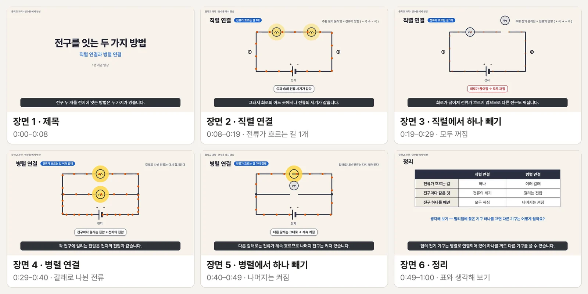

1분 설명 영상 만들기
장면과 자막을 HTML로 짜고 MP4 영상으로 내보냅니다. 편집 프로그램 없이 Code 탭에서 «장면표 → 장면 그림 → 영상» 순서로 만듭니다.
- 목표
- 장면 6개와 자막이 들어간 1분짜리 개념 설명 영상을 MP4로 만든다 (예시: 중학교 과학 «전기 회로의 직렬·병렬 연결»)
- 준비물
클로드연수안에 만든 빈14차시폴더, Node.js(LTS 판)와 FFmpeg — 있는지 없는지는 따라 하기 4단계에서 클로드가 확인하고 설치 방법을 안내- 결과물
- ①
직렬병렬_1분.mp4(1280×720, 60초, 몇 MB) ② 영상의 원본인 HTML 폴더 — 고친 뒤 다시 내보낼 수 있음 - 주의
- 과학 개념은 교사가 검수 · 소리는 17차시에서 넣음 · HyperFrames 의 클라우드 렌더링 같은 유료 기능은 쓰지 않기
13차시의 HTML 애니메이션은 교사가 띄워 놓고 넘기는 자료이고, 영상(MP4)은 어디서나 재생되어 클래스룸·패들렛에 올리거나 학생이 집에서 다시 보기 좋습니다. HyperFrames 는 HTML로 짠 장면을 브라우저로 한 프레임씩 찍어 MP4로 만드는 오픈소스 도구(npm 패키지 hyperframes, Apache-2.0)입니다. 같은 일을 하는 Remotion(npm remotion)도 있습니다. 핵심은 둘입니다. 시간·화면·자막을 적은 장면표를 먼저 받는 것, 그리고 영상으로 굽기 전에 장면 그림으로 미리 확인하는 것입니다. 영상은 굽는 데 시간이 걸리므로 그림 단계에서 고치는 편이 빠릅니다.
먼저 볼 영상
 11:48
먼저 볼 영상클로드 코드로 영상 만드는 법 왕초보도 가능합니다ㅣ하이퍼프레임 가이드유튜브신쌤 · 유튜브대본만 주고 클로드 코드와 HyperFrames 로 영상을 만드는 과정을 왕초보 눈높이로 다룹니다.
11:48
먼저 볼 영상클로드 코드로 영상 만드는 법 왕초보도 가능합니다ㅣ하이퍼프레임 가이드유튜브신쌤 · 유튜브대본만 주고 클로드 코드와 HyperFrames 로 영상을 만드는 과정을 왕초보 눈높이로 다룹니다.
 9:44
먼저 볼 영상리모션 익스플레이너 영상 누구나 쉽게 만들기 (feat. 입문편, 클로드 코드)라이프3.0픽처스 · 유튜브클로드 코드와 Remotion 으로 설명형(익스플레이너) 영상을 만드는 입문편입니다. 설명란에 강의 개요와 PDF 교재 안내가 있습니다.
9:44
먼저 볼 영상리모션 익스플레이너 영상 누구나 쉽게 만들기 (feat. 입문편, 클로드 코드)라이프3.0픽처스 · 유튜브클로드 코드와 Remotion 으로 설명형(익스플레이너) 영상을 만드는 입문편입니다. 설명란에 강의 개요와 PDF 교재 안내가 있습니다.
두 번째 영상은 Remotion 을 씁니다. 이 차시는 HyperFrames 로 따라 하고, Remotion 을 쓰고 싶으면 프롬프트의 «HyperFrames»를 «Remotion»으로 바꿉니다. Remotion 은 기관 규모에 따라 유료 라이선스가 필요할 수 있습니다.
1 준비
클로드연수안에 빈 폴더14차시를 만듭니다.- Node.js 는 HyperFrames 를 돌리는 프로그램입니다. 없으면 nodejs.org 에서 LTS(장기 지원) 판 설치 파일을 받아 설치합니다(2026-11-11 기준 LTS 는 26.x, HyperFrames 는 22 이상 필요). 설치되어 있는지는 따라 하기 4단계에서 클로드가 먼저 확인해 주므로 미리 설치하지 않아도 됩니다.
- 학교 PC는 프로그램 설치가 막혀 있을 수 있습니다. 그럴 때는 정보 담당 선생님께 Node.js·FFmpeg 설치를 부탁하거나 개인 노트북으로 실습합니다.
2 따라 하기
번호 순서대로 진행합니다. 프롬프트가 필요한 단계에는 바로 아래에 복사 단추가 있습니다.
- 데스크톱 앱 사이드바 맨 위의 Code 탭을 누릅니다.
- 프롬프트 상자 아래 줄의 환경 단추에서 Local 묶음의 맨 위 항목(내 컴퓨터)을 고르고, 폴더 단추의 Open folder… 로
클로드연수/14차시를 고릅니다. - 권한 모드를 Manual 로 둡니다. 클로드가 프로그램을 설치하거나 명령을 실행하기 전에 매번 묻습니다.
- 준비 점검을 맡깁니다. 빠진 프로그램이 있으면 클로드가 설치 방법을 알려 줍니다.
이 폴더에서 HyperFrames(npm 패키지 hyperframes, HTML로 만든 장면을 MP4로 내보내는 무료 오픈소스 도구)로 영상을 만들려고 합니다. 먼저 내 컴퓨터를 점검만 해 주세요. 1. Node.js 가 설치되어 있는지, 판이 22 이상인지 2. FFmpeg 가 있는지 3. npx hyperframes doctor 결과에서 빠진 것 없는 것이 있으면 내 운영체제(윈도우·맥)에 맞는 설치 방법을 단계별로 알려 주고, 내가 허락하기 전에는 설치하지 마세요. HyperFrames 의 클라우드 렌더링이나 유료 기능은 쓰지 않습니다.
Node.js 는 nodejs.org 의 LTS 설치 파일로 까는 것이 가장 쉽습니다. FFmpeg 는 클로드가 운영체제에 맞는 설치 명령을 알려 줍니다. 설치를 마친 뒤에는 앱을 다시 시작해야 새 프로그램을 찾는 경우가 있습니다. HyperFrames 는 처음 실행할 때 익명 사용 통계를 보낸다고 안내합니다. 끄고 싶으면 «hyperframes 사용 통계를 꺼 주세요»라고 요청합니다(
npx hyperframes telemetry disable).캡처 넣을 곳 · L14-1
준비 점검 결과 (따라 하기 4번).- 빨간 상자: 점검 결과 표, 명령 실행 전 승인 단추
- 권한 모드를 Plan 으로 바꾸고 장면표를 받습니다. 고칠 점은 말로 고칩니다. 예: «3번 장면 자막을 두 개로 나눠 주세요»
중학교 과학 '전기 회로의 직렬·병렬 연결' 1분 설명 영상을 HyperFrames 로 만들려고 합니다. 먼저 장면표만 세워 주세요. 요구 사항 - 1280×720, 60초, 장면 6개 안팎 - 장면마다 화면 아래에 자막 (한 줄 30자 안팎, 최대 2줄) - 전지와 전구 2개로 직렬·병렬 회로를 그리고, 전류의 방향(+극 → −극)을 움직이는 점으로 보여 주기 - 직렬과 병렬에서 각각 전구 하나를 빼면 어떻게 되는지 보여 주기 - 마지막 장면은 정리 표와 학생이 생각해 볼 질문 하나 - 글꼴은 이 폴더에 넣어 쓰고, 인터넷에서 불러오는 파일 없이 - 소리는 넣지 않음 (17차시에서 넣음) 장면표: 시간 | 화면 | 움직임 | 자막 과학 내용에서 단순화한 점이 있으면 따로 적어 주세요.
«시간» 열이 있어야 1분에 맞출 수 있고, «자막» 열이 있어야 영상을 만들기 전에 문장을 검수할 수 있습니다. «인터넷에서 불러오는 파일 없이»를 적어 두면 학교망에서 막히는 글꼴·라이브러리 때문에 글자가 깨지는 일을 막습니다.
캡처 넣을 곳 · L14-2
장면표 (따라 하기 5번).- 장면표 전체가 보이게
- 권한 모드를 Manual 로 바꾸고 만들기를 맡깁니다. 영상으로 굽기 전에 장면 그림부터 받습니다.
장면표대로 만들어 주세요. 영상으로 내보내기 전에 장면마다 한 장씩 장면 그림(npx hyperframes snapshot)을 찍어 보여 주고, 글자가 잘리거나 겹치는 곳이 없는지 먼저 확인해 주세요.
- 장면 그림을 보고 고칠 점을 하나씩 말합니다. 예: «4번 장면의 설명 상자가 회로 선을 가려요. 아래로 옮겨 주세요»
- 그림이 괜찮으면 MP4로 내보냅니다. 1분 영상은 컴퓨터에 따라 몇 분 걸립니다.
이제 MP4 로 내보내 주세요. - 파일 이름: 직렬병렬_1분.mp4 - 1280×720, 30fps, 파일 크기는 10MB 이하 다 되면 영상 길이·크기·용량을 알려 주세요.
캡처 넣을 곳 · L14-3
완성 영상 재생 (따라 하기 8번).- 빨간 상자: 대화창의
직렬병렬_1분.mp4경로와 재생 화면
- 빨간 상자: 대화창의
- 아래 프롬프트로 과학 내용을 검수하게 합니다.
과학 내용을 검수해 주세요. 1. 전류를 나타내는 점이 전지의 + 극에서 나와 − 극으로 들어가게 움직이는지 2. 직렬은 전류가 흐르는 길이 하나, 병렬은 여러 갈래로 그려졌는지 3. '직렬에서는 전류의 세기가 같고, 병렬에서는 각 전구에 걸리는 전압이 같다'는 설명이 맞게 들어갔는지 4. 자막에 교과서 용어와 다른 말이 있는지 틀린 곳은 고친 뒤 다시 내보내고, 고친 내용을 한 줄씩 알려 주세요.
- 완성한
직렬병렬_1분.mp4를 클래스룸 등에 올립니다. 나중에 고칠 때는 «2번 장면 자막을 이렇게 바꾸고 다시 내보내 주세요»처럼 말하면 원본 HTML을 고쳐 다시 만듭니다.
3 결과 예시

npx hyperframes init 으로 만든 기본 틀에 프롬프트 2의 요구 사항대로 장면 HTML을 직접 써 넣고(클로드 앱 화면이 아닙니다), npx hyperframes snapshot 으로 장면 그림을 확인한 뒤 npx hyperframes render 로 내보냈습니다. 1분 영상을 굽는 데 약 50초 걸렸습니다. 움직임은 HyperFrames 기본인 GSAP 라이브러리로, 글꼴은 Pretendard 파일을 폴더에 넣어 썼습니다. 클로드 코드의 실제 결과는 화면 구성과 색이 매번 다릅니다.4 검증 포인트
② 자막과 화면 — 자막이 말하는 순간에 그 장면이 화면에 나오는지, 자막이 회로 그림을 가리지 않는지 봅니다.
③ 읽을 시간 — 자막 하나를 소리 내어 두 번 읽을 수 있을 만큼 머무는지 봅니다. 너무 빠르면 «자막마다 1초씩 더 길게»라고 요청합니다.
④ 단순화 표시 — 전구 밝기, 전지의 내부 저항처럼 생략한 점을 교사가 알고 수업에서 보충할 수 있는지 봅니다.
⑤ 영상 정보 — 길이 1분, 1280×720, 용량이 올릴 곳의 한도 안인지 봅니다.
⑥ 다른 PC에서 재생 — 학교 PC의 기본 플레이어나 크롬·엣지에서 열리는지 봅니다.
⑦ 저작권 — 그림·글꼴을 출처가 분명한 것만 썼는지 봅니다. Pretendard 는 무료로 쓸 수 있는 공개 글꼴입니다.
5 다른 교과에 적용하기
따라 하기 5단계 프롬프트 대신 아래 교과 프롬프트를 씁니다. 6단계(장면 그림)는 그대로 쓰고, 8단계는 파일 이름만 바꿉니다. 교과마다 «다 만든 뒤 확인할 것»을 넣어 두었으니 9단계는 아래 공통 프롬프트로 바꿔 씁니다. 자료가 필요한 사례는 교사가 확인한 자료 파일을 폴더에 함께 넣어 줍니다.
영상 내용을 검수해 주세요. 1. 장면표의 «다 만든 뒤 확인할 것»을 하나씩 점검 2. 자막에 교과서 용어와 다른 말이나 틀린 숫자가 있는지 3. 학생이 오해할 만한 그림이나 움직임이 있는지 틀린 곳은 고친 뒤 다시 내보내고, 고친 내용을 한 줄씩 알려 주세요.
수학소인수분해60을 나뭇가지 모양으로 쪼개 2² × 3 × 5
중학교 수학 '소인수분해' 1분 설명 영상을 HyperFrames 로 만들려고 합니다. 먼저 장면표만 세워 주세요. 요구 사항 - 1280×720, 60초, 장면 6개 안팎 - 장면마다 화면 아래에 자막 (한 줄 30자 안팎, 최대 2줄) - 60 을 가장 작은 소수부터 나누는 나뭇가지 그림이 자라나는 장면 - 같은 소수의 곱을 거듭제곱으로 나타내기 (2 × 2 = 2²) - 다른 순서로 쪼개도(예: 6 × 10) 결과가 같음을 보여 주기 - 마지막 장면은 정리와 학생이 생각해 볼 질문 하나 - 글꼴은 이 폴더에 넣어 쓰고, 인터넷에서 불러오는 파일 없이 - 소리는 넣지 않음 다 만든 뒤 확인할 것 - 결과가 60 = 2² × 3 × 5 인지 - 나뭇가지 끝의 수가 모두 소수인지 - 1 을 소수처럼 다루지 않았는지 장면표: 시간 | 화면 | 움직임 | 자막 교과 내용에서 단순화한 점이 있으면 따로 적어 주세요.
수학정비례 그래프y = 2x 의 점이 하나씩 찍혀 직선이 됨
중학교 수학 '정비례 관계의 그래프' 1분 설명 영상을 HyperFrames 로 만들려고 합니다. 먼저 장면표만 세워 주세요. 요구 사항 - 1280×720, 60초, 장면 6개 안팎 - 장면마다 화면 아래에 자막 (한 줄 30자 안팎, 최대 2줄) - x 가 1, 2, 3 일 때 y = 2x 의 값을 표에 채우고 좌표평면에 점을 찍는 장면 - 점을 이으면 원점을 지나는 직선이 됨 - y = −x 그래프와 비교 - 마지막 장면은 정리와 학생이 생각해 볼 질문 하나 - 글꼴은 이 폴더에 넣어 쓰고, 인터넷에서 불러오는 파일 없이 - 소리는 넣지 않음 다 만든 뒤 확인할 것 - 점 (1, 2), (2, 4), (3, 6) 이 맞는 자리에 찍히는지 - 두 직선이 모두 원점을 지나는지 - y = −x 는 오른쪽 아래로 내려가는지 장면표: 시간 | 화면 | 움직임 | 자막 교과 내용에서 단순화한 점이 있으면 따로 적어 주세요.
과학광합성빛·물·이산화탄소로 포도당과 산소를 만듦
중학교 과학 '광합성' 1분 설명 영상을 HyperFrames 로 만들려고 합니다. 먼저 장면표만 세워 주세요. 요구 사항 - 1280×720, 60초, 장면 6개 안팎 - 장면마다 화면 아래에 자막 (한 줄 30자 안팎, 최대 2줄) - 잎 그림에 뿌리에서 올라온 물, 기공으로 들어온 이산화탄소, 햇빛이 모이는 장면 - 엽록체에서 포도당과 산소가 만들어지고 산소가 기공으로 나가는 장면 - 정리 식: 이산화탄소 + 물 → (빛에너지) 포도당 + 산소 - 마지막 장면은 정리와 학생이 생각해 볼 질문 하나 - 글꼴은 이 폴더에 넣어 쓰고, 인터넷에서 불러오는 파일 없이 - 소리는 넣지 않음 다 만든 뒤 확인할 것 - 식의 왼쪽(재료)과 오른쪽(만들어지는 것)이 맞는지 - 광합성이 엽록체에서 일어난다고 표시되는지 - 산소가 기공으로 나가게 그려졌는지 장면표: 시간 | 화면 | 움직임 | 자막 교과 내용에서 단순화한 점이 있으면 따로 적어 주세요.
과학일식과 월식태양·지구·달의 순서와 그림자
중학교 과학 '일식과 월식' 1분 설명 영상을 HyperFrames 로 만들려고 합니다. 먼저 장면표만 세워 주세요. 요구 사항 - 1280×720, 60초, 장면 6개 안팎 - 장면마다 화면 아래에 자막 (한 줄 30자 안팎, 최대 2줄) - 태양·지구·달을 옆에서 본 그림 - 일식: 태양–달–지구 순서로 놓이고 달의 그림자가 지구에 생김 - 월식: 태양–지구–달 순서로 놓이고 달이 지구 그림자 속으로 들어감 - 크기와 거리는 실제 비율이 아니라고 화면에 밝히기 - 마지막 장면은 정리와 학생이 생각해 볼 질문 하나 - 글꼴은 이 폴더에 넣어 쓰고, 인터넷에서 불러오는 파일 없이 - 소리는 넣지 않음 다 만든 뒤 확인할 것 - 일식은 삭, 월식은 망 무렵이라고 설명하는지 - 세 천체의 순서가 맞는지 - 그림자가 태양 반대쪽으로 생기는지 장면표: 시간 | 화면 | 움직임 | 자막 교과 내용에서 단순화한 점이 있으면 따로 적어 주세요.
국어비유법직유법과 은유법 비교 (교사 예문만)
중학교 국어 '비유법 — 직유법과 은유법' 1분 설명 영상을 HyperFrames 로 만들려고 합니다. 먼저 장면표만 세워 주세요. 요구 사항 - 1280×720, 60초, 장면 6개 안팎 - 장면마다 화면 아래에 자막 (한 줄 30자 안팎, 최대 2줄) - 첨부한 예문.txt 의 문장으로 직유법(~처럼, ~같이, ~듯이)과 은유법(A는 B이다)을 비교 - 비유하는 대상과 비유되는 대상을 화살표로 잇기 - 저작권이 있는 시나 교과서 지문은 쓰지 않기 - 마지막 장면은 정리와 학생이 생각해 볼 질문 하나 - 글꼴은 이 폴더에 넣어 쓰고, 인터넷에서 불러오는 파일 없이 - 소리는 넣지 않음 다 만든 뒤 확인할 것 - 직유 예문에는 '처럼·같이·듯이' 같은 연결어가 있고 은유 예문에는 없는지 - 예문이 첨부 파일과 같은지 장면표: 시간 | 화면 | 움직임 | 자막 교과 내용에서 단순화한 점이 있으면 따로 적어 주세요.
영어현재진행형be + 동사-ing 로 지금 하고 있는 일
중학교 영어 '현재진행형' 1분 설명 영상을 HyperFrames 로 만들려고 합니다. 먼저 장면표만 세워 주세요. 요구 사항 - 1280×720, 60초, 장면 6개 안팎 - 장면마다 화면 아래에 자막 (한 줄 30자 안팎, 최대 2줄) - 그림 속 인물이 하는 일과 문장 'She is reading a book.' 'They are playing soccer.' - 주어에 따라 be동사가 am / is / are 로 바뀌는 장면 - -ing 붙이는 규칙 (make → making, run → running) - 마지막 장면은 정리와 학생이 생각해 볼 질문 하나 - 글꼴은 이 폴더에 넣어 쓰고, 인터넷에서 불러오는 파일 없이 - 소리는 넣지 않음 다 만든 뒤 확인할 것 - 주어와 be동사가 맞는지 (I am, She is, They are) - making, running 의 철자가 맞는지 장면표: 시간 | 화면 | 움직임 | 자막 교과 내용에서 단순화한 점이 있으면 따로 적어 주세요.
사회기후 그래프 읽기월별 기온·강수량 그래프 (첨부 자료만)
중학교 사회 '기후 그래프 읽기' 1분 설명 영상을 HyperFrames 로 만들려고 합니다. 먼저 장면표만 세워 주세요. 요구 사항 - 1280×720, 60초, 장면 6개 안팎 - 장면마다 화면 아래에 자막 (한 줄 30자 안팎, 최대 2줄) - 첨부한 기후자료.csv (교사가 공공 자료에서 옮긴 값)로 강수량 막대와 기온 꺾은선이 그려지는 장면 - 가장 더운 달과 비가 가장 많이 오는 달을 짚기 - 자료 출처와 기준 기간을 화면에 표시 - 마지막 장면은 정리와 학생이 생각해 볼 질문 하나 - 글꼴은 이 폴더에 넣어 쓰고, 인터넷에서 불러오는 파일 없이 - 소리는 넣지 않음 다 만든 뒤 확인할 것 - 그래프의 값이 첨부 파일과 같은지 - 축 이름과 단위(℃, mm)가 있는지 - 파일에 없는 숫자를 지어내지 않았는지 장면표: 시간 | 화면 | 움직임 | 자막 교과 내용에서 단순화한 점이 있으면 따로 적어 주세요.
역사훈민정음 창제 원리발음 기관을 본뜬 자음, 하늘·땅·사람을 본뜬 모음
중학교 역사 '훈민정음 창제 원리' 1분 설명 영상을 HyperFrames 로 만들려고 합니다. 먼저 장면표만 세워 주세요. 요구 사항 - 1280×720, 60초, 장면 6개 안팎 - 장면마다 화면 아래에 자막 (한 줄 30자 안팎, 최대 2줄) - 자음 기본자 ㄱ·ㄴ·ㅁ·ㅅ·ㅇ 이 발음 기관의 모양에서 나오는 장면 - 획을 더해 ㅋ, ㄷ·ㅌ 등이 만들어지는 가획의 원리 - 모음 기본자 ·(하늘)·ㅡ(땅)·ㅣ(사람)를 합쳐 ㅗ·ㅏ 등을 만드는 장면 - 1443년 창제, 1446년 반포 - 마지막 장면은 정리와 학생이 생각해 볼 질문 하나 - 글꼴은 이 폴더에 넣어 쓰고, 인터넷에서 불러오는 파일 없이 - 소리는 넣지 않음 다 만든 뒤 확인할 것 - 기본자와 본뜬 모양이 맞는지 (ㄱ 혀뿌리가 목구멍을 막는 모양, ㄴ 혀가 윗잇몸에 닿는 모양, ㅁ 입, ㅅ 이, ㅇ 목구멍) - 연도가 맞는지 장면표: 시간 | 화면 | 움직임 | 자막 교과 내용에서 단순화한 점이 있으면 따로 적어 주세요.
도덕저작물 바르게 쓰기CCL 표시의 뜻과 출처 밝히기
중학교 도덕 '정보 윤리 — 저작물 바르게 쓰기' 1분 설명 영상을 HyperFrames 로 만들려고 합니다. 먼저 장면표만 세워 주세요. 요구 사항 - 1280×720, 60초, 장면 6개 안팎 - 장면마다 화면 아래에 자막 (한 줄 30자 안팎, 최대 2줄) - 인터넷 사진을 쓰기 전에 이용 조건을 확인하는 장면 - CCL 네 가지 표시: 저작자표시(BY), 비영리(NC), 변경금지(ND), 동일조건변경허락(SA) - 출처를 밝히는 방법 예시 - 마지막 장면은 정리와 학생이 생각해 볼 질문 하나 - 글꼴은 이 폴더에 넣어 쓰고, 인터넷에서 불러오는 파일 없이 - 소리는 넣지 않음 다 만든 뒤 확인할 것 - 네 표시의 뜻이 맞는지 - '인터넷에 있으면 마음대로 써도 된다'는 오해를 바로잡는 장면이 있는지 장면표: 시간 | 화면 | 움직임 | 자막 교과 내용에서 단순화한 점이 있으면 따로 적어 주세요.
기술·가정멀티탭 안전정격 용량을 넘기면 위험
중학교 기술·가정 '전기 안전 — 멀티탭 바르게 쓰기' 1분 설명 영상을 HyperFrames 로 만들려고 합니다. 먼저 장면표만 세워 주세요. 요구 사항 - 1280×720, 60초, 장면 6개 안팎 - 장면마다 화면 아래에 자막 (한 줄 30자 안팎, 최대 2줄) - 멀티탭에 전기 기구를 하나씩 꽂으며 소비 전력 합계가 늘어나는 장면 - 멀티탭에 적힌 정격 전압·전류로 쓸 수 있는 최대 전력을 계산하는 장면 - 문어발 연결, 먼지와 물기 주의 - 마지막 장면은 정리와 학생이 생각해 볼 질문 하나 - 글꼴은 이 폴더에 넣어 쓰고, 인터넷에서 불러오는 파일 없이 - 소리는 넣지 않음 다 만든 뒤 확인할 것 - 정격 16 A, 전압 220 V 로 계산하면 3,520 W 로 나오는지 - 합계가 정격을 넘을 때 경고가 나오는지 - 제품마다 표시가 다르니 내 멀티탭을 확인하라는 말이 있는지 장면표: 시간 | 화면 | 움직임 | 자막 교과 내용에서 단순화한 점이 있으면 따로 적어 주세요.
정보순서도순차·선택·반복 구조로 라면 끓이기
중학교 정보 '순서도와 알고리즘' 1분 설명 영상을 HyperFrames 로 만들려고 합니다. 먼저 장면표만 세워 주세요. 요구 사항 - 1280×720, 60초, 장면 6개 안팎 - 장면마다 화면 아래에 자막 (한 줄 30자 안팎, 최대 2줄) - '라면 끓이기'를 순서도로 그려 나가는 장면 (시작·끝, 처리, 판단 기호) - 물이 끓었는지 확인하는 반복, 달걀을 넣을지 고르는 선택 - 순서도 기호의 모양과 이름 정리 - 마지막 장면은 정리와 학생이 생각해 볼 질문 하나 - 글꼴은 이 폴더에 넣어 쓰고, 인터넷에서 불러오는 파일 없이 - 소리는 넣지 않음 다 만든 뒤 확인할 것 - 판단 기호는 마름모, 처리 기호는 직사각형인지 - 반복의 화살표가 판단 앞으로 되돌아가는지 - 끝나지 않는 반복이 없는지 장면표: 시간 | 화면 | 움직임 | 자막 교과 내용에서 단순화한 점이 있으면 따로 적어 주세요.
음악셈여림표pp 부터 ff 까지, 크레셴도와 디크레셴도
중학교 음악 '셈여림표' 1분 설명 영상을 HyperFrames 로 만들려고 합니다. 먼저 장면표만 세워 주세요. 요구 사항 - 1280×720, 60초, 장면 6개 안팎 - 장면마다 화면 아래에 자막 (한 줄 30자 안팎, 최대 2줄) - 셈여림표 pp, p, mp, mf, f, ff 가 차례로 나오며 글자 크기와 막대 높이로 세기를 표현 - 크레셴도(점점 세게)와 디크레셴도(점점 여리게) 기호 - 소리는 넣지 않고 화면으로만 - 마지막 장면은 정리와 학생이 생각해 볼 질문 하나 - 글꼴은 이 폴더에 넣어 쓰고, 인터넷에서 불러오는 파일 없이 - 소리는 넣지 않음 다 만든 뒤 확인할 것 - 뜻이 맞는지 (pp 매우 여리게, p 여리게, mp 조금 여리게, mf 조금 세게, f 세게, ff 매우 세게) - 크레셴도 기호가 오른쪽으로 벌어지는 모양인지 장면표: 시간 | 화면 | 움직임 | 자막 교과 내용에서 단순화한 점이 있으면 따로 적어 주세요.
미술명도 대비같은 회색이 바탕에 따라 달라 보임
중학교 미술 '색의 대비 — 명도 대비' 1분 설명 영상을 HyperFrames 로 만들려고 합니다. 먼저 장면표만 세워 주세요. 요구 사항 - 1280×720, 60초, 장면 6개 안팎 - 장면마다 화면 아래에 자막 (한 줄 30자 안팎, 최대 2줄) - 같은 회색 네모를 흰 바탕과 검은 바탕에 놓고 비교하는 장면 - 두 네모를 가운데로 모으면 같은 색임이 드러나는 장면 - 보색 대비 예시 하나 - 마지막 장면은 정리와 학생이 생각해 볼 질문 하나 - 글꼴은 이 폴더에 넣어 쓰고, 인터넷에서 불러오는 파일 없이 - 소리는 넣지 않음 다 만든 뒤 확인할 것 - 두 회색 네모의 색값이 코드에서 정말 같은지 - 흰 바탕 위 회색이 더 어둡게 보인다는 설명이 맞는지 장면표: 시간 | 화면 | 움직임 | 자막 교과 내용에서 단순화한 점이 있으면 따로 적어 주세요.
체육준비 운동과 정리 운동왜 하는지와 순서
중학교 체육 '준비 운동과 정리 운동' 1분 설명 영상을 HyperFrames 로 만들려고 합니다. 먼저 장면표만 세워 주세요. 요구 사항 - 1280×720, 60초, 장면 6개 안팎 - 장면마다 화면 아래에 자막 (한 줄 30자 안팎, 최대 2줄) - 준비 운동: 가벼운 걷기·관절 돌리기·스트레칭으로 체온과 심박수를 서서히 올림 - 정리 운동: 천천히 걷기와 스트레칭으로 서서히 낮춤 - 둘 다 부상 예방에 도움이 된다는 정리 - 마지막 장면은 정리와 학생이 생각해 볼 질문 하나 - 글꼴은 이 폴더에 넣어 쓰고, 인터넷에서 불러오는 파일 없이 - 소리는 넣지 않음 다 만든 뒤 확인할 것 - 준비 운동과 정리 운동의 목적이 뒤바뀌지 않았는지 - 동작 그림이 무리한 자세가 아닌지 장면표: 시간 | 화면 | 움직임 | 자막 교과 내용에서 단순화한 점이 있으면 따로 적어 주세요.
코드로 만드는 영상은 장면표가 곧 대본입니다. 시간·화면·자막을 표로 먼저 정하면 1분 안에 무엇을 보여 줄지 교사가 결정하고, 클로드는 그대로 만듭니다. 영상으로 굽기 전에 장면 그림으로 확인하면 고치는 시간이 줄고, 원본이 HTML이라 자막 한 줄만 바꿔 다시 내보낼 수 있습니다.
· «node 를 찾을 수 없습니다» 같은 오류 — Node.js 가 없거나 설치 뒤 앱을 다시 시작하지 않은 것입니다. 설치한 뒤 데스크톱 앱을 껐다 켭니다.
· FFmpeg 가 없다고 한다 — 클로드가 알려 주는 운영체제별 설치 방법을 따릅니다. 학교 PC에서 설치가 막히면 정보 담당 선생님께 부탁합니다.
· 한글이 네모로 깨진다 — «한글 글꼴 파일을 폴더에 넣고 그 글꼴을 쓰게 해 주세요»라고 요청합니다.
· 내보내기가 너무 오래 걸린다 — 먼저 «10초만 시험으로 내보내 주세요»라고 해 확인한 뒤 전체를 굽습니다. 다른 프로그램을 닫으면 빨라집니다.
· 영상 파일이 너무 크다 — «파일 크기를 5MB 이하로 다시 내보내 주세요»라고 요청합니다.
· Code 탭에서 업그레이드 안내가 뜬다 — 유료 플랜이 아닌 계정입니다. 연수 전 점검 1번을 봅니다.
더 보기
 16:08
더 보기클로드 코드 X remotion 미친 조합! 모션 영상 만드는 새로운 방법 (비개발자를 위한 가이드)행글라이터 · 유튜브클로드 코드에 Remotion 스킬을 설치하고 말로 모션 영상을 만드는 과정을 비개발자 눈높이로 다룹니다.
16:08
더 보기클로드 코드 X remotion 미친 조합! 모션 영상 만드는 새로운 방법 (비개발자를 위한 가이드)행글라이터 · 유튜브클로드 코드에 Remotion 스킬을 설치하고 말로 모션 영상을 만드는 과정을 비개발자 눈높이로 다룹니다.
 12:41
더 보기클로드 코드와 하이퍼프레임으로 모션 그래픽 영상 제작 (feat. 입문편)라이프3.0픽처스 · 유튜브클로드 코드와 HyperFrames 로 모션그래픽 영상을 만드는 입문편입니다.
12:41
더 보기클로드 코드와 하이퍼프레임으로 모션 그래픽 영상 제작 (feat. 입문편)라이프3.0픽처스 · 유튜브클로드 코드와 HyperFrames 로 모션그래픽 영상을 만드는 입문편입니다.
출처: npm 패키지 정보 hyperframes 0.9.33(«Make videos with code and AI agents: write HTML, render MP4. Open source.», Node.js 22 이상·FFmpeg 필요, Apache-2.0)과 remotion 4.x(라이선스 파일) · Node.js 배포 목록 nodejs.org (LTS 26.x) · Claude Code 문서 Use Claude Code Desktop — 권한 모드, 앱 안 창에서 파일 열기 (2026-11-11 확인)